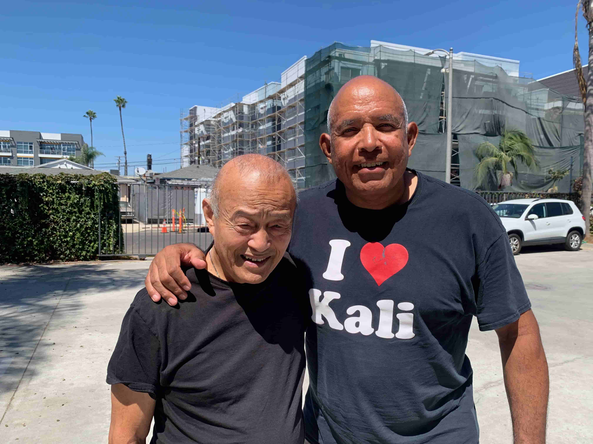

Acerca de Roy Harris

Aquí estoy en 2025 junto a mi instructor de Jeet Kune Do y Artes Marciales Filipinas, Guro Dan Inosanto
Durante más de cuatro décadas, he dedicado mi vida a responder una pregunta sumamente importante:
¿Cómo pueden las personas comunes llegar a ser extraordinariamente eficaces en su entrenamiento, sin depender de unas capacidades atléticas excepcionales y en muy poco tiempo?
Esta pregunta me ha llevado por todo el mundo, donde he estudiado veintisiete estilos diferentes de artes marciales bajo la tutela de decenas de instructores excepcionales y he enseñado a miles de alumnos: desde principiantes absolutos hasta miembros de los SEAL y del GROM; desde practicantes de entre 70 y 80 años hasta agentes, oficiales y miembros de las fuerzas del orden; así como hombres y mujeres que simplemente buscan disfrutar de su entrenamiento sin sufrir lesiones innecesarias.
A lo largo del camino, descubrí que el mayor obstáculo para progresar no suele ser la falta de esfuerzo. Son los movimientos ineficientes, una mecánica corporal deficiente y los métodos de entrenamiento que no se adaptan a cada persona.
He ayudado a cientos de alumnos de Jiu Jitsu de entre cuarenta y setenta años a reducir drásticamente las lesiones, al tiempo que aumentaban su confianza y disfrutaban más sobre el tatami. He ayudado a numerosos practicantes de Jeet Kune Do y Artes Marciales Filipinas a salvar la distancia entre practicar técnicas (es decir, el «arte») y aplicarlas bajo presión (es decir, el «combate»). He mostrado a alumnos de menor tamaño, de más edad y con menor capacidad atlética cómo el uso de la palanca, el sentido del tiempo, el control de la distancia y el posicionamiento pueden imponerse a la juventud, la fuerza y el tamaño.
Mi objetivo no es simplemente enseñar técnicas. Mi propósito es resolver los problemas que se interponen entre usted y el practicante en el que desea convertirse.
Si busca una enseñanza inteligente, avances medibles y un instructor, entrenador y mentor comprometido con ayudarle a alcanzar sus objetivos, será un honor poder ayudarle. Póngase en contacto conmigo a través del número de teléfono o la dirección de correo electrónico que aparecen a continuación, ¡y hablemos!
Gracias por su tiempo,
Roy
Teléfono: 1-98-98-HARRIS
Correo electrónico: roy@royharris.com
P.D. Para quienes quieran saberlo, he aquí un vistazo de mi amplia trayectoria:
- Recibió el premio Distinguished Merit Award por salvar la vida de tres personas mientras servía como agente de policía.
- Obtuvo el prestigioso Coral Belt en Jiu Jitsu brasileño
- Fue reconocido como "Angel of the Week" por una emisora de radio local por su destacado servicio a la comunidad.
- Estudió casi 30 sistemas de artes marciales
- Se convirtió en instructor sénior del Jeet Kune Do de Bruce Lee
- Obtuvo numerosas certificaciones de cinturón negro
- Impartió casi 1.000 seminarios a nivel mundial
- Realizó numerosos programas de desarrollo para instructores a nivel internacional
- Proporcionó formación práctica a más de 50 organizaciones militares y policiales
- Se convirtió en instructor certificado de WRAP y Kettlebell
- Sirvió como miembro militar, agente de policía y Técnico en Emergencias Médicas/Paramédico
- Es un sobreviviente de cáncer
- Es autor de dos libros y cientos de artículos instructivos
- Ascendió a más de 40 personas a cinturón negro
- Creó más de 20 aplicaciones educativas y más de 1.000 videos instructivos
- Fue presentado en numerosos artículos de revistas, entrevistas y podcasts
- Fue incluido en el Masters Hall of Fame con un Premio Pionero.
- Fue presentado en un programa de televisión de distribución nacional
Estos logros son importantes solo porque me han permitido ayudar a clientes/alumnos a aprender de manera más eficiente, rendir con mayor confianza, minimizar lesiones y alcanzar los objetivos establecidos en un período de tiempo más corto!